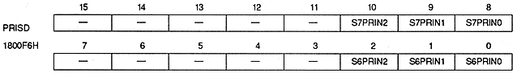
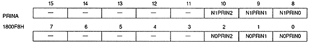
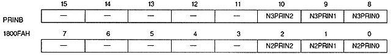
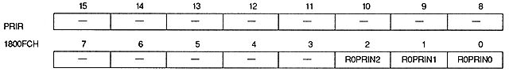

Priority number bit (for sprites) : Sprite priority number bit
S0PRIN2 ~ S0PRIN0 | 1800F0H | bits 2 to 0 | Sprite register 0 |
S1PRIN2 to S1PRIN0 | 1800F0H | bits 10 to 8 | Sprite register 1 |
S2PRIN2 to S2PRIN0 | 1800F2H | bits 2 to 0 | Sprite register 2 |
S3PRIN2 to S3PRIN0 | 1800F2H | bits 10 to 8 | Sprite register 3 |
S4PRIN2 to S4PRIN0 | 1800F4H | bits 2 to 0 | Sprite register 4 |
S5PRIN2 to S5PRIN0 | 1800F4H | bits 10 to 8 | Sprite Register 5 |
S6PRIN2 to S6PRIN0 | 1800F6H | bits 2 to 0 | Sprite register 6 |
S7PRIN2 to S7PRIN0 | 1800F6H | bits 10 to 8 | Sprite register 7 |



Priority number bit (for scroll screen) : Priority number bit